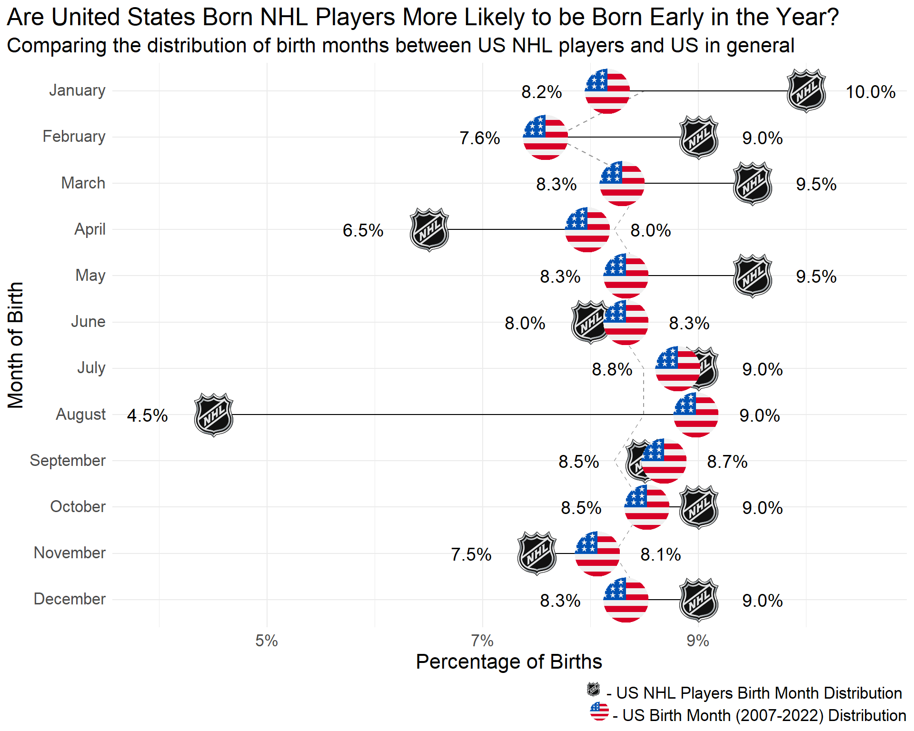
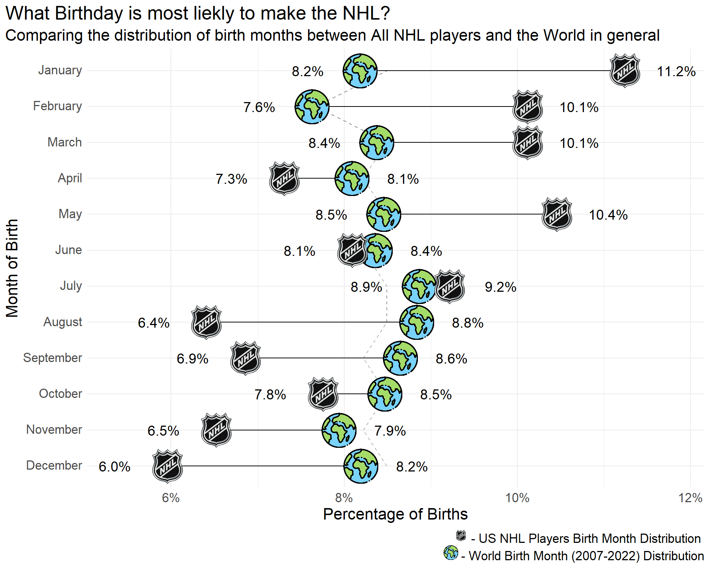

usa_raw <- wonderapi::send_query("D66", here::here("posts", "2024-05-15-US-NHL-Birthrate", "cdc_wonder_request.xml"))
usa_births <- usa_raw %>%
dplyr::group_by(Month) %>%
dplyr::summarise(country_births = sum(Births), .groups = "drop") %>%
dplyr::mutate(country_pct = country_births / sum(country_births))This post is inspired by this fantastic blog post on Jlaws Blog. In it they explore how in the first chapter Malcolm Gladwell’s Outliers he discusses how in Canadian Junior Hockey there is a higher likelihood for players to be born in the first quarter of the year. As it appears cutoff dates for USA hockey are different and they are currently using June 1st (if my internet searches are to be believed), I wondered if the same analysis would hold true for American Born Players.
Distribution of Births by Month in the United States
The data for US Birth Rates can be pulled from CDC Wonder. The particular table of interest is the Natality, 2007 - 2022. CDC Wonder has a quite interesting API that requires a request with quite a few XML parameters. Thankfully you can build the request on the website and a nice package already exists to send the query. Check out the Wonderapi Page for more info.
Distribution of Births Compared to Expected
The data from CDC Wonder pulls in quite nice, the only addition is adding a column for expected Births. This column gives each day of each month an equal chance for a person being born. Based on the data the summer months (June through August), and September have a slightly higher actual birth vs expected. Based on cut off Dates many of these kids would be the oldest in their age groups.
usa_births %>%
dplyr::mutate(expected_births = dplyr::case_when(
Month %in% c("April", "June", "September", "November") ~ 30 / 365
, Month == "February" ~ 28 / 365
, .default = 31 / 365
)
, difference = country_pct - expected_births
, dplyr::across(Month, ~factor(., levels = month.name))
, dplyr::across(c(country_pct, expected_births, difference), ~scales::percent(., accuracy = .1))
) %>%
dplyr::arrange(Month) %>%
dplyr::rename_with(~stringr::str_replace_all(., "_", " ")) %>%
dplyr::rename_with(stringr::str_to_title) %>%
kableExtra::kbl() %>%
kableExtra::kable_styling()| Month | Country Births | Country Pct | Expected Births | Difference |
|---|---|---|---|---|
| January | 5118343 | 8.2% | 8.5% | -0.3% |
| February | 4758741 | 7.6% | 7.7% | -0.1% |
| March | 5205579 | 8.3% | 8.5% | -0.2% |
| April | 5001651 | 8.0% | 8.2% | -0.3% |
| May | 5226642 | 8.3% | 8.5% | -0.2% |
| June | 5226141 | 8.3% | 8.2% | 0.1% |
| July | 5528731 | 8.8% | 8.5% | 0.3% |
| August | 5635283 | 9.0% | 8.5% | 0.5% |
| September | 5448101 | 8.7% | 8.2% | 0.5% |
| October | 5348495 | 8.5% | 8.5% | 0.0% |
| November | 5059952 | 8.1% | 8.2% | -0.2% |
| December | 5227828 | 8.3% | 8.5% | -0.2% |
Hockey Data
While I wish I could sit and type out how I sat and figured out the complexity of the NHL Stats API and how to bring it into R. In reality I took a great guide, that being Jlaws post, and tweaked what I needed. Instead of Canadian players, I pulled out just the US Born players and their birth dates. I did also pull out positions to see if that will make any sort of difference. What pulls out of the NHL API has a ton of great details and I look forward to diving into what is available to see what kind of graphics can be built.
08/27/2024 Update Due to the the Coyotes moving to Utah, I had to edit the code slightly to adjust for this. When gathering the active roster data the API was returning a blank response. This was causing Tidyr Hoist to fail because it could not pull the columns from the nested data frame. I added a check to see if the data frame is empty and if it is, then I return an empty data frame and skip this step.
teams <- httr::GET("https://api.nhle.com/stats/rest/en/team") %>%
httr::content() %>%
.[["data"]] %>%
tibble::tibble(data = .) %>%
tidyr::unnest_wider(data)
get_roster <- function(team){
df <- httr::GET(glue::glue("https://api-web.nhle.com/v1/roster/{team}/20232024")) %>%
httr::content() %>%
purrr::flatten() %>%
tibble::tibble(data = .)
if (!nrow(df) == 0) {
df <- df |>
tidyr::hoist(
.col = "data"
, "firstName" = list("firstName", 1L)
, "lastName" = list("lastName", 1L)
, "positionCode"
, "birthDate"
, "birthCountry"
)
}
return(df)
}
usa_roster <- purrr::map(teams$triCode, get_roster) %>%
purrr::list_rbind() %>%
dplyr::filter(!is.na(firstName)) %>%
dplyr::filter(birthCountry == "USA") %>%
dplyr::mutate(
mob = lubridate::month(lubridate::ymd(birthDate), label = TRUE, abbr = FALSE)
, mob_id = lubridate::month(lubridate::ymd(birthDate))
) %>%
dplyr::count(mob_id, mob, name = "players") %>%
dplyr::mutate(player_pct = players / sum(players))Graph It
Lets now take a look at the graph. Using the ggimage package we can place nice logos for both the United States and NHL on the graph. This stands out quite nicely versus just using a colored point. Interesting enough the graph seems to show being born early on in the year may mean making the NHL is more likely.
nhl_icon <- "https://pbs.twimg.com/media/F9sTTAYakAAkRv6.png"
usa_icon <- "https://cdn-icons-png.flaticon.com/512/197/197484.png"
combined <- usa_roster %>%
dplyr::left_join(usa_births, by = c("mob" = "Month")) %>%
dplyr::mutate(
random = dplyr::case_when(
mob_id %in% c(4, 6, 9, 11) ~ 30 / 365,
mob_id %in% c(1, 3, 5, 7, 8, 10, 12) ~ 31 / 365,
mob_id == 2 ~ 28 / 365
)
)
# labels <- combined %>% glue::glue_data("{mob} <br> n = {players}")
g1 <- combined %>%
ggplot(aes(x = forcats::fct_reorder(mob, -mob_id))) +
geom_line(aes(y = random, group = 1), linetype = 2, color = "grey60") +
geom_linerange(aes(ymin = country_pct, ymax = player_pct)) +
geom_image(aes(image = nhl_icon, y = player_pct), size = 0.1) +
geom_image(aes(image = usa_icon, y = country_pct), size = 0.08) +
geom_text(aes(label = scales::percent(player_pct, accuracy = .1),
y = dplyr::if_else(player_pct > country_pct, player_pct + .006, player_pct - .006)), size = 5) +
geom_text(aes(label = scales::percent(country_pct, accuracy = .1),
y = dplyr::if_else(country_pct > player_pct, country_pct + .006, country_pct - .006)), size = 5) +
scale_y_continuous(labels = scales::percent) +
# scale_x_discrete(labels = labels) +
coord_flip() +
labs(
x = "Month of Birth"
, y = "Percentage of Births"
, title = "Are United States Born NHL Players More Likely to be Born Early in the Year?"
, subtitle = "Comparing the distribution of birth months between US NHL players and US in general"
, caption = glue::glue(
"<img src = {nhl_icon} width = '15' height=' 15' /> - US NHL Players Birth Month Distribution <br />
<img src = {usa_icon} width = '15' height=' 15' /> - US Birth Month (2007-2022) Distribution"
)
) +
theme_minimal() +
theme(
plot.caption = element_markdown()
, plot.title.position = "plot"
, text = element_text(size = 16)
, axis.text = element_markdown()
)
g1
# Stats ----
broom::tidy(chisq.test(x = combined$players, p = combined$country_pct))# A tibble: 1 × 4
statistic p.value parameter method
<dbl> <dbl> <dbl> <chr>
1 7.34 0.771 11 Chi-squared test for given probabilitiesIf we look at this from a more stats based perspective, running a chi square test on the amount of players in the NHL per month, based on the US expected birth rate, we do see however there is quite a high p value. This is lets us know we can not reject the Null hypothesis that these are the same thing.
A Little Fun
For just a little bit of fun I pulled birth data for the entire world using the UN’s website. I then filtered this out to just countries that currently have players in the NHL. The graph shows more of the same, looks to lean heavily to the beginning of the year, and this time the stat back it up. So being born early in the year may in fact help your chances of making it to the NHL
g2 <- combined_world %>%
ggplot(aes(x = forcats::fct_reorder(mob, -mob_id))) +
geom_line(aes(y = random, group = 1), linetype = 2, color = "grey60") +
geom_linerange(aes(ymin = world_pct, ymax = player_pct)) +
geom_image(aes(image = world_icon, y = world_pct), size = 0.08) +
geom_image(aes(image = nhl_icon, y = player_pct), size = 0.1) +
geom_text(aes(label = scales::percent(player_pct, accuracy = .1),
y = dplyr::if_else(player_pct > world_pct, player_pct + .006, player_pct - .006)), size = 5) +
geom_text(aes(label = scales::percent(world_pct, accuracy = .1),
y = dplyr::if_else(world_pct > player_pct, world_pct + .006, world_pct - .006)), size = 5) +
scale_y_continuous(labels = scales::percent) +
coord_flip() +
labs(
x = "Month of Birth"
, y = "Percentage of Births"
, title = "What Birthday is most liekly to make the NHL?"
, subtitle = "Comparing the distribution of birth months between All NHL players and the World in general"
, caption = glue::glue(
"<img src = {nhl_icon} width = '15' height=' 15' /> - US NHL Players Birth Month Distribution <br />
<img src = {world_icon} width = '15' height=' 15' /> - World Birth Month (2007-2022) Distribution"
)
) +
theme_minimal() +
theme(
plot.caption = element_markdown()
, plot.title.position = "plot"
, text = element_text(size = 16)
, axis.text = element_markdown()
)
g2
broom::tidy(chisq.test(x = combined_world$players, p = combined_world$world_pct))# A tibble: 1 × 4
statistic p.value parameter method
<dbl> <dbl> <dbl> <chr>
1 28.8 0.00243 11 Chi-squared test for given probabilitiesReuse
Citation
BibTeX citation:
@online{belanger2024,
author = {Belanger, Kyle},
title = {Does a {US} {Born} {Players} {Birthdate} Affect Their Shot at
the {NHL}},
date = {2024-06-08},
langid = {en}
}
For attribution, please cite this work as:
Belanger, Kyle. 2024. “Does a US Born Players Birthdate Affect
Their Shot at the NHL.” June 8, 2024.